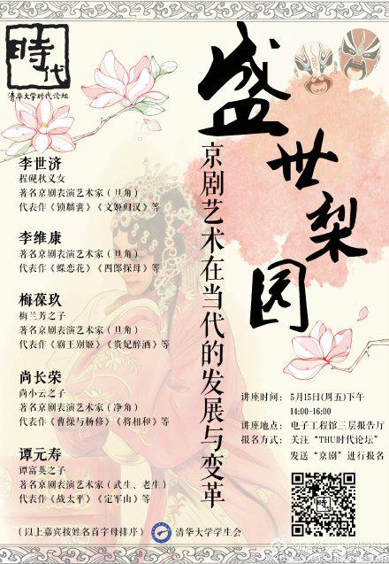

名言
Table of Contents
If people do not believe that mathematics is simple, it is only because they do not realize how complicated life is. ——Quotation by Von-Neumann
如果有人不相信数学是简单的，那是因为他们没有意识到人生有多复杂。 ——冯・诺伊曼
If people do not believe that mathematics is simple, it is only because they do not realize how complicated life is. ——Quotation by Von-Neumann
如果有人不相信数学是简单的，那是因为他们没有意识到人生有多复杂。 ——冯・诺伊曼
使用 Jekyll, Hexo 等框架在 GitHub Pages 上搭建静态个人博客越来越流行。
而我选用 Nikola 框架的原因是他原生支持 org-mode 文件的解析。此外，它是用 python 写成的，对于我这种不会 Ruby 的人，更为有亲和力。
辩协微信平台约的稿
突然发现距离上次代表清华大学辩论队向大家问好，已有两年半了。三过门前老病死，一弹指兮去来今。老成凋谢，故人飘零，不知天涯旧友，别来如何？
追忆就像“怀旧”这个词所表示的那样，往事给人带来的往往是一种隔帘望月式的憧憬与向往，时间把许多人们不愿意回忆的东西过滤出去，于是在史书与文学，留下来的总是想像中值得留恋的事情，特别是当追忆者对现实不那么满意的时候，对古代的追忆就成了他们针砭现实的一面镜子。而揽镜自照，六载寒暑，又有多少是可与人言的呢。
============================================================
你问我，旧日风光是什么样子？
在我眼中，最美好的岁月，是一个“妖论”横行的年代。
在那时我们用逻辑检证着常识中的傲慢，试图用新颖的视角展开辩题中不那么显然的内容。
如果你有兴趣追溯每个念头的来源，你会发现许多约定俗成的观念，既没有清晰的来由，也不曾被清晰地整理过。
道教的祖师是老子，但你看一眼道德经，就会发现“何况玄元圣祖五千言，不言药，不言仙，不言白日升青天。”
佛讲因果，是有果必有因，是客观规律;人讲因果，是行善得善报，是道德交易。
更不要谈儒家了，“一部经学史就是一部误读史”。那些所谓儒家思想、孔子真义，其实和孔子本人并没有太大关系…真正发生巨大影响的却是何休版孔子、杜预版孔子、郑玄版孔子、孔颖达版孔子、朱熹版孔子、王阳明版孔子。
很多你习以为常的东西，很可能并不那么的自古以来。往往有些逻辑短路的地方，是每个人心灵的根须，坚定地拒绝着任何一把喜欢刨根究底的铲子。
辩论之前，我们活了很久;
辩论之后，我们仍将活很久;
辩论只是人生的一次机会，让我们组织与自己有关的一些信息
魏晋被评价为“文学的自觉时代”，后人如是说：一个事物的发展由自发到自觉，由模糊混沌、朦胧无知到认识自己、反省自己，是一个质的飞跃，在事物的发展过程中具有非凡意义。
以我们的天赋，能力不高，水平有限，但我们会让对手记住的是，无知和弱小不是生存的障碍，傲慢才是。
接下来写三个朋友，七八九三个久远年级。春秋，王者之事，老人不谈后世政治。
冯玉祥写了本书，叫《我所认识的蒋介石》。后人评价，从这本书认识不了蒋介石，倒是能认识冯玉祥。一笑
焦鹏飞同学，八字班，截止到发稿日时校队第一高富帅，目测近期在高这一点上还没有出现挑战者的可能。
辩风文静沉稳，很典型的儒辩，场上四两拨千斤的表现经常让人感慨——生子当如焦鹏飞。
这是我最早的队友，也是我辩论的启蒙老师，大一的系新生赛和清锋明辩，基本上就是我们一群人啥都不懂，唯一有经验老焦给我们讲什么叫立论，怎么打攻辩，带着一群菜鸟飞进决赛才被打掉的历程。
后来进了校队，然后他就毕业了，我当时的心情是——可喜可贺!!!
再也特么没有人能拦着劳资退休了——请参考张居正死了以后万历的心情。
但半退休状态的时候我还做了一件事，拉着几个九字班的，一群老流氓打了一次清锋明辩——当年一个名不见经传小院系梦想起飞的地方。
你以为我要讲一个高富帅和屌丝的友谊？不不不。我要讲的是一种病。
人生于世，便有欲望——
人，在痛苦与无聊间如钟摆般切换，这便是叔本华的“钟摆理论”。
而对于很多辩手而言，胜负之间，这个钟摆一直在摆动。于是他们问自己，辩论有意义么？
我们有跳出循环的可能吗？
王国维写过一首《浣溪沙》，下阙如是，“隔座听歌人似玉，六街归骑月如霜。客中行乐只寻常。”
前两景美，后一句客中行乐，终归不是家园。
不过，正是这样一颗飘泊作客之心，看到这个世界美丽的瞬间。
这一刻，你与世界没有利益的关系，索求的欲望，所以你从叔本华的钟摆中短暂跳脱出来。
如何哀乐不入于胸次？你在路上。
辩论要有胜负之外的追求，不是辩论的需要，是辩手的需要。
有没有一群人，一种信念，或者一段约定，时刻提醒着，你是如何起程的。“嗟尔远道之人，胡为乎来哉？”
人如此，事也如此。所以孟子说——所谓故国者，非谓有乔木之谓也，有世臣之谓也。
任队是我跟老焦进校队时候的队长，七字班。杨过怎样情圣，谁也没见过，我想他应该像任仕廷一样讨姑娘喜欢才名不虚传。
辩风很亲民，辩词妇孺能解，真正做到了“见人说人话，见鬼说鬼话”的化境。
他是会根据听众调整表达方式的人，这点极重要而能做到的人极少，我们时常忘了——
摇摆在正反之间思索的辩手也许注定形影相吊，但站上天平用表达影响世界的辩手不能孤芳自赏。
校队组织归属，辩协的架构，还有最初与帝都各校的关系，都是由他奠基的。此外，当年宽松的气氛，把校队从个人崇拜严重的家天下，变得平等宽松，任队居功至伟（你看我们见他都能喊傻逼2333）。
其余的，就在下面这一副对联一张图里了
七十二轮月圆，公提孤臣偏师，效虬髯创业，至今礼乐尤君制；
十有六州幽云，人笑闭关锁国，始剖符建节，自是功业赖此基
九字班是黄金一代，我一直这么说。所以按理来说选个代表应该是很困难的。
但这个选择一点儿都不艰难，因为这里面有一个“风华绝代”的辩手——要知道这句是实指，这位辩手一毕业，她的风格真就绝了…
没有见过王亦舒的人是很遗憾的。你没有机会跟着她的立论一起，陪桓大司马一起凄怆潇洒，从那株情何以堪的柳树上折下嫩枝，送给彭城飞来的燕子，听它们呢喃着一个白杨做柱、红粉成灰的故事；把故事卖给多才的纪昀，由他在阅微草堂里敷衍出两三则不可告人却偏偏告人的鬼话； 然后跟着德富芦花去辨识北海道繁杂的植物种类，继而不待休整，便又在埃兹拉·庞德的地铁站里任所有人候车人吐出的白蒙蒙的呵气把自己的脸孔意象化成湿漉漉的、紧贴着黝黑的枝条的花瓣…
是的，我说的就是文字驾驭能力。
诶，你在笑是么？是不是笑我还活在九十年代那个朗诵式辩论的时代。
那你记得陈铭2010年全辩决赛的结辩么，有色眼镜、历史天空——你以为那些是什么？
在有限的时间内，如何扩展文字的容量。用典、意象、音韵、节奏，这是文字张力所在。
来个直观的例子，川端康成《伊豆的舞女》，美吧，换成“保定的舞女”你感受一下。
这同样不是辩论的必须，而是辩手的必须，尤其对于那些天才而敏感的人：
一个人在悲哀的境遇中自然很容易陷入悲哀的情绪，而在欢乐的顶点有时候竟也会生出一种
刻骨的悲凉，这种悲凉比之前者往往深刻许多，因为它摆脱了切身的利害，而指向了人生的
终极——
最美好的事物反而变成了最令人悲伤的，因为我们会晓得，今天有多好，明天就有多痛。于
是我们甚至会生出这样的质疑：命运之所以在今天眷顾我们，就是为了在明天抛弃我们，它
之所以给了我们那么多美好的事物，就是为了看我们如何失去它们。
绝不止辩论。佛说无常皆苦，人生天地逆旅之间：今日相亲，明日相仇；今日把盏言欢，明
日形同陌路。爱别离，怨憎会，求不得，：）。
是的，若抛开这些人名、地名、掌故、意象——所有这些诚然是文学的粉饰，剩下的支离破碎，才是这岁月流光里真实生活的样子。我们就是破碎生活中的一个个原子。
意象是什么，是文字的古老仪式，我们通过同样的行为，表达、确认和巩固一个群体的共有价值观和信仰，驱逐孤独，强化连接，建立归属感。
我们创立了它，用它来驱赶孤独，增强勇气。
正如我们用泥土塑成偶像，又用它来寄托宗教情感一样。
我们赋予它价值，又从它身上取得价值。
咸阳原上英雄骨，半向君家养马来。 ——李商隐《浑河中》
其实这一段往事，三段怀人，换个角度看，按照2134的顺序排下来，就是我所理解辩论的四个主题了。
把立论看成一个人的话，这就是他的神、骨、肉、衣。（好吧，我承认我对于成体系有着近乎偏执的个人恶趣味）
============================================================
最后，解释一下题目吧。
“情之所钟，正在我辈”的背景是这样的。
王衍的孩子死了，山简来吊唁。
王衍悲不自胜，山简劝他：世间俗情，生死化灭，自然之理，何必动心至此。（大概如此）
王衍回答的全句是这样：“圣人忘情，最下不及于情，然则情之所钟，正在我辈。”
你要看得开一点，才能在辩论中厘清攻防得失，有风度，有理性；
你要看不开一点，才能入戏，才能有感召力，更重要的，你才能坚信一些东西，推动一些东西。
冷眼看穿，热肠挂住。
道统的力量，不来源于权力，来源于信仰，固执与不惜死。
红尘滚滚，只有不看破，才会有入世的热情。
孟子说：“当今之世，舍我其谁”。
人能宏道，非道宏人。

特邀嘉宾控场能力太水，完全控制不住大师们的发言时间，最后时间紧张到要靠时代论坛的主持强行打断梅葆玖先生的发言。。。可惜啦，七宝楼台，拆下不成片段
这里面没有任何有价值的信息，也没有任何有意义的思考，如果还有人点进来，那请做好浪费时间的准备。
你倒是想“己所欲，施于人”，谁理你呀。 为仁也在天，人最多努力个求仁，然后落个“求仁得仁，又何怨焉”。
——好像人家都拿过冠军（可能需要排除了生物） ——看来我是出于嫉妒……这简直是一定的
【睡不着滴时候，是发神经滴时候】二流的积累，三流的论点，四流的语言，不入流的操作，以及同样不入流的人际关系——回想我所谓的辩论经历。在其中穿插着被各种旧日相识花式打脸，我宁愿去听萍水相逢的寒暄，温暖的一bi(当然这些话听完就得了，当不得真，殷鉴不远，在夏后之世。)我果然不适合与人群待在一起。不过我同样讨厌与自己待在一起